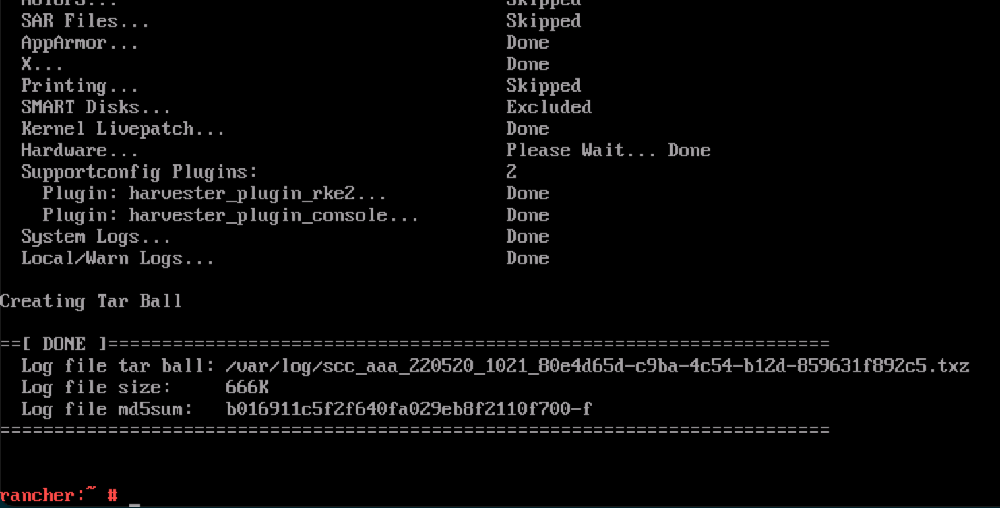

Problèmes d’installation
Les sections suivantes contiennent des conseils pour résoudre les problèmes ou obtenir de l’aide concernant les installations échouées.
Connexion au programme d’installation (un système d’exploitation live)
Les utilisateurs peuvent appuyer sur la combinaison de touches CTRL + ALT + F2 pour passer à un autre TTY et se connecter avec les identifiants suivants :
-
Utilisateur :
rancher -
Mot de passe :
rancher
Respect des exigences matérielles
-
Vérifiez que votre matériel répond aux exigences minimales pour compléter l’installation.
Bloqué dans Loading images. This may take a few minutes…
Parce que le système n’a pas de route par défaut, votre installateur peut devenir "bloqué" dans cet état. Vous pouvez vérifier l’état de votre route en exécutant la commande suivante :
$ ip route
default via 10.10.0.10 dev mgmt-br proto dhcp <-- Does a default route exist?
10.10.0.0/24 dev mgmt-br proto kernel scope link src 10.10.0.15Vérifiez que votre serveur DHCP propose une option de route par défaut. Attacher du contenu depuis /run/cos/target/rke2.log est également utile.
Pour plus d’informations, voir Configuration du serveur DHCP.
Modification du token de cluster sur les nœuds agents
Lorsqu’un nœud agent échoue à rejoindre le cluster, cela peut être lié au fait que le token de cluster n’est pas identique au token du nœud serveur.
Pour confirmer le problème, connectez-vous à votre nœud agent (c’est-à-dire avec SSH) et vérifiez le journal de service rancherd avec la commande suivante :
sudo journalctl -b -u rancherdSi le jeton de cluster configuré dans le nœud agent ne correspond pas au jeton du nœud serveur, vous trouverez plusieurs entrées du message suivant :
msg="Bootstrapping Rancher (v2.7.5/v1.25.9+rke2r1)"
msg="failed to bootstrap system, will retry: generating plan: response 502: 502 Bad Gateway getting cacerts: <html>\r\n<head><title>502 Bad Gateway</title></head>\r\n<body>\r\n<center><h1>502 Bad Gateway</h1></center>\r\n<hr><center>nginx</center>\r\n</body>\r\n</html>\r\n"Notez que la version Rancher et l’adresse IP dépendent de votre environnement et peuvent différer du message ci-dessus.
Pour résoudre le problème, vous devez mettre à jour la valeur du token dans le fichier de configuration rancherd /etc/rancher/rancherd/config.yaml.
Par exemple, si le token de cluster configuré dans le nœud serveur est ThisIsTheCorrectOne, vous mettrez à jour la valeur du token comme suit :
token: 'ThisIsTheCorrectOne'Pour garantir que le changement soit persistant après les redémarrages, mettez à jour la valeur token du fichier de configuration du système d’exploitation /oem/90_custom.yaml :
name: Harvester Configuration
stages:
...
initramfs:
- commands:
- ...
files:
- path: /etc/rancher/rancherd/config.yaml
permissions: 384
owner: 0
group: 0
content: |
server: https://$cluster-vip:443
role: agent
token: "ThisIsTheCorrectOne"
kubernetesVersion: v1.25.9+rke2r1
rancherVersion: v2.7.5
rancherInstallerImage: rancher/system-agent-installer-rancher:v2.7.5
labels:
- harvesterhci.io/managed=true
extraConfig:
disable:
- rke2-snapshot-controller
- rke2-snapshot-controller-crd
- rke2-snapshot-validation-webhook
encoding: ""
ownerstring: ""|
Pour voir quelle est la valeur actuelle du token de cluster, connectez-vous à votre nœud serveur (c’est-à-dire avec SSH) et regardez dans le fichier |
Vérification de l’état des composants
Avant de vérifier l’état des composants SUSE Virtualization, obtenez une copie du fichier kubeconfig du cluster en utilisant l’une des méthodes suivantes :
-
Dans l’interface utilisateur SUSE Virtualization, allez à l’écran Support puis cliquez sur Télécharger KubeConfig.
-
Exécutez les commandes suivantes sur l’un des nœuds de gestion :
$ sudo su $ cat /etc/rancher/rke2/rke2.yaml
Après avoir obtenu une copie du fichier kubeconfig, exécutez le script suivant contre le cluster pour vérifier la disponibilité de chaque composant.
-
Composants SUSE Virtualization
#!/bin/bash cluster_ready() { namespaces=("cattle-system" "kube-system" "harvester-system" "longhorn-system") for ns in "${namespaces[@]}"; do pod_statuses=($(kubectl -n "${ns}" get pods \ --field-selector=status.phase!=Succeeded \ -ojsonpath='{range .items[*]}{.metadata.namespace}/{.metadata.name},{.status.conditions[?(@.type=="Ready")].status}{"\n"}{end}')) for status in "${pod_statuses[@]}"; do name=$(echo "${status}" | cut -d ',' -f1) ready=$(echo "${status}" | cut -d ',' -f2) if [ "${ready}" != "True" ]; then echo "pod ${name} is not ready" false return fi done done } if cluster_ready; then echo "cluster is ready" else echo "cluster is not ready" fi -
API
$ curl -fk https://<VIP>/versionVous devez remplacer
<VIP>par le VIP actuel, qui est la valeur dekube-vip.io/requestedIP.
Collecte d’informations sur le dépannage
Veuillez inclure les informations suivantes dans un rapport de bogue lors du signalement d’une installation échouée :
-
Une capture d’écran de l’installation échouée.
-
Informations système et journaux.
Veuillez suivre le guide dans [Logging into the Installer (a live OS)] pour vous connecter. Et exécutez la commande pour générer une archive tar contenant des informations sur le dépannage :
supportconfig -k -cLes messages de sortie de la commande contiennent le chemin de l’archive tar générée. Par exemple, le chemin est
/var/loq/scc_aaa_220520_1021 804d65d-c9ba-4c54-b12d-859631f892c5.txzdans l’exemple suivant :
Une installation de démarrage en environnement PXE ayant échoué génère automatiquement une archive tar si le champ
install.debugest défini surtruedans le fichier de configuration.
Vérification de l’état du chart
SUSE Virtualization utilise les chart CRD suivants :
-
HelmChart: Maintient les charts RKE2.-
rke2-runtimeclasses -
rke2-multus -
rke2-metrics-server -
rke2-ingress-nginx -
rke2-coredns -
rke2-cannal
-
-
ManagedChart: Gère les charts Rancher et SUSE Virtualization.-
rancher-monitoring-crd -
rancher-logging-crd -
kubeovn-operator-crd -
harvester-crd -
harvester
-
Vous pouvez utiliser la commande helm list -A pour récupérer une liste des charts installés.
Exemple de sortie :
NAME NAMESPACE REVISION UPDATED STATUS CHART APP VERSION
fleet cattle-fleet-system 4 2025-09-24 09:07:10.801764068 +0000 UTC deployed fleet-107.0.0+up0.13.0 0.13.0
fleet-agent-local cattle-fleet-local-system 1 2025-09-24 08:59:28.686781982 +0000 UTC deployed fleet-agent-local-v0.0.0+s-d4f65a6f642cca930c78e6e2f0d3f9bbb7d3ba47cf1cce34ac3d6b8770ce5
fleet-crd cattle-fleet-system 1 2025-09-24 08:58:28.396419747 +0000 UTC deployed fleet-crd-107.0.0+up0.13.0 0.13.0
harvester harvester-system 1 2025-09-24 08:59:37.718646669 +0000 UTC deployed harvester-0.0.0-master-ac070598 master-ac070598
harvester-crd harvester-system 1 2025-09-24 08:59:35.341316526 +0000 UTC deployed harvester-crd-0.0.0-master-ac070598 master-ac070598
kubeovn-operator-crd kube-system 1 2025-09-24 08:59:34.783356576 +0000 UTC deployed kubeovn-operator-crd-1.13.13 v1.13.13
mcc-local-managed-system-upgrade-controller cattle-system 1 2025-09-24 08:59:10.656784284 +0000 UTC deployed system-upgrade-controller-107.0.0 v0.16.0
rancher cattle-system 1 2025-09-24 08:57:20.690330683 +0000 UTC deployed rancher-2.12.0 8815e66-dirty
rancher-logging-crd cattle-logging-system 1 2025-09-24 08:59:36.262080367 +0000 UTC deployed rancher-logging-crd-107.0.1+up4.10.0-rancher.10
rancher-monitoring-crd cattle-monitoring-system 1 2025-09-24 08:59:35.287099045 +0000 UTC deployed rancher-monitoring-crd-107.1.0+up69.8.2-rancher.15
rancher-provisioning-capi cattle-provisioning-capi-system 1 2025-09-24 08:59:00.561162307 +0000 UTC deployed rancher-provisioning-capi-107.0.0+up0.8.0 1.10.2
rancher-webhook cattle-system 2 2025-09-24 09:02:38.774660489 +0000 UTC deployed rancher-webhook-107.0.0+up0.8.0 0.8.0
rke2-canal kube-system 1 2025-09-24 08:57:25.248839867 +0000 UTC deployed rke2-canal-v3.30.2-build2025071100 v3.30.2
rke2-coredns kube-system 1 2025-09-24 08:57:25.341016864 +0000 UTC deployed rke2-coredns-1.42.302 1.12.2
rke2-ingress-nginx kube-system 3 2025-09-24 09:01:31.331647555 +0000 UTC deployed rke2-ingress-nginx-4.12.401 1.12.4
rke2-metrics-server kube-system 1 2025-09-24 08:57:42.162046899 +0000 UTC deployed rke2-metrics-server-3.12.203 0.7.2
rke2-multus kube-system 1 2025-09-24 08:57:25.341560394 +0000 UTC deployed rke2-multus-v4.2.106 4.2.1
rke2-runtimeclasses kube-system 1 2025-09-24 08:57:40.137168056 +0000 UTC deployed rke2-runtimeclasses-0.1.000 0.1.0HelmChart CRD
Des éléments HelmChart sont installés par des travaux. Vous pouvez déterminer le nom et l’état de chaque travail en exécutant la commande suivante sur le nœud SUSE Virtualization :
$ kubectl get helmcharts -A -o jsonpath='{range .items[*]}{"Namespace: "}{.metadata.namespace}{"\nName: "}{.metadata.name}{"\nStatus:\n"}{range .status.conditions[*]}{" - Type: "}{.type}{"\n Status: "}{.status}{"\n Reason: "}{.reason}{"\n Message: "}{.message}{"\n"}{end}{"JobName: "}{.status.jobName}{"\n\n"}{end}'Exemple de sortie :
Namespace: kube-system
Name: rke2-canal
Status:
- Type: JobCreated
Status: True
Reason: Job created
Message: Applying HelmChart using Job kube-system/helm-install-rke2-canal
- Type: Failed
Status: False
Reason:
Message:
JobName: helm-install-rke2-canal
Namespace: kube-system
Name: rke2-coredns
Status:
- Type: JobCreated
Status: True
Reason: Job created
Message: Applying HelmChart using Job kube-system/helm-install-rke2-coredns
- Type: Failed
Status: False
Reason:
Message:
JobName: helm-install-rke2-coredns
Namespace: kube-system
Name: rke2-ingress-nginx
Status:
- Type: JobCreated
Status: True
Reason: Job created
Message: Applying HelmChart using Job kube-system/helm-install-rke2-ingress-nginx
- Type: Failed
Status: False
Reason:
Message:
JobName: helm-install-rke2-ingress-nginx
Namespace: kube-system
Name: rke2-metrics-server
Status:
- Type: JobCreated
Status: True
Reason: Job created
Message: Applying HelmChart using Job kube-system/helm-install-rke2-metrics-server
- Type: Failed
Status: False
Reason:
Message:
JobName: helm-install-rke2-metrics-server
Namespace: kube-system
Name: rke2-multus
Status:
- Type: JobCreated
Status: True
Reason: Job created
Message: Applying HelmChart using Job kube-system/helm-install-rke2-multus
- Type: Failed
Status: False
Reason:
Message:
JobName: helm-install-rke2-multus
Namespace: kube-system
Name: rke2-runtimeclasses
Status:
- Type: JobCreated
Status: True
Reason: Job created
Message: Applying HelmChart using Job kube-system/helm-install-rke2-runtimeclasses
- Type: Failed
Status: False
Reason:
Message:
JobName: helm-install-rke2-runtimeclassesVous pouvez utiliser les informations de la manière suivante :
-
Déterminez la cause d’un travail échoué : Vérifiez les valeurs
ReasonetMessagede la conditionFailed. -
Relancez un travail : Supprimez le champ
Statuspour ce travail spécifique du CRDHelmChart. Le contrôleur déploie un nouveau travail.
ManagedChart CRD
Rancher utilise SUSE® Rancher Prime: Continuous Delivery pour installer des charts sur des clusters cibles. SUSE Virtualization n’a qu’un seul cluster cible (fleet-local/local).
SUSE® Rancher Prime: Continuous Delivery déploie un agent sur chaque cluster cible via helm install, afin que vous puissiez trouver le chart fleet-agent-local en utilisant la commande helm list -A. Le CRD cluster.fleet.cattle.io contient l’état de l’agent.
apiVersion: fleet.cattle.io/v1alpha1
kind: Cluster
metadata:
name: local
namespace: fleet-local
spec:
agentAffinity:
nodeAffinity:
preferredDuringSchedulingIgnoredDuringExecution:
- preference:
matchExpressions:
- key: fleet.cattle.io/agent
operator: In
values:
- "true"
weight: 1
agentNamespace: cattle-fleet-local-system
clientID: xd8cgpm2gq5w25qf46r8ml6qxvhsg858g64s5k7wj5h947vs5sxbwd
kubeConfigSecret: local-kubeconfig
kubeConfigSecretNamespace: fleet-local
redeployAgentGeneration: 1
status:
agent:
lastSeen: "2025-09-01T07:09:28Z"
namespace: cattle-fleet-local-system
agentAffinityHash: f50425c0999a8e18c2d104cdb8cb063762763f232f538b5a7c8bdb61
agentDeployedGeneration: 1
agentMigrated: true
agentNamespaceMigrated: true
agentTLSMode: system-store
apiServerCAHash: 158866807fdf372a1f1946bb72d0fbcdd66e0e63c4799f9d4df0e18b
apiServerURL: https://10.53.0.1:443
cattleNamespaceMigrated: true
conditions:
- lastUpdateTime: "2025-08-28T04:43:02Z"
status: "True"
type: Processed
- lastUpdateTime: "2025-08-28T10:08:31Z"
status: "True"
type: Imported
- lastUpdateTime: "2025-08-28T10:08:30Z"
status: "True"
type: Reconciled
- lastUpdateTime: "2025-08-28T10:09:30Z"
status: "True"
type: ReadyRancher convertit le CRD ManagedChart en une ressource Bundle avec un préfixe mcc-. L’agent SUSE® Rancher Prime: Continuous Delivery surveille les ressources Bundle et les déploie sur le cluster cible. La ressource BundleDeployment contient l’état de déploiement.
Le SUSE® Rancher Prime: Continuous Delivery contrôleur ne pousse pas les données vers l’agent. Au lieu de cela, l’agent interroge les données de ressource Bundle depuis le cluster sur lequel le SUSE® Rancher Prime: Continuous Delivery contrôleur est installé. Dans SUSE Virtualization, le SUSE® Rancher Prime: Continuous Delivery contrôleur et l’agent sont sur le même cluster, donc les problèmes de réseau ne sont pas une préoccupation.
$ kubectl get bundledeployments -A -o jsonpath='{range .items[*]}{"Namespace: "}{.metadata.namespace}{"\nName: "}{.metadata.name}{"\nStatus:\n"}{range .status.conditions[*]}{" - Type: "}{.type}{"\n Status: "}{.status}{"\n Reason: "}{.reason}{"\n Message: "}{.message}{"\n"}{end}{"\n"}{end}'
Namespace: cluster-fleet-local-local-1a3d67d0a899
Name: fleet-agent-local
Status:
- Type: Installed
Status: True
Reason:
Message:
- Type: Deployed
Status: True
Reason:
Message:
- Type: Ready
Status: True
Reason:
Message:
- Type: Monitored
Status: True
Reason:
Message:
Namespace: cluster-fleet-local-local-1a3d67d0a899
Name: mcc-harvester
Status:
- Type: Installed
Status: True
Reason:
Message:
- Type: Deployed
Status: True
Reason:
Message:
- Type: Ready
Status: True
Reason:
Message:
- Type: Monitored
Status: True
Reason:
Message:
Namespace: cluster-fleet-local-local-1a3d67d0a899
Name: mcc-harvester-crd
Status:
- Type: Installed
Status: True
Reason:
Message:
- Type: Deployed
Status: True
Reason:
Message:
- Type: Ready
Status: True
Reason:
Message:
- Type: Monitored
Status: True
Reason:
Message:
Namespace: cluster-fleet-local-local-1a3d67d0a899
Name: mcc-kubeovn-operator-crd
Status:
- Type: Installed
Status: True
Reason:
Message:
- Type: Deployed
Status: True
Reason:
Message:
- Type: Ready
Status: True
Reason:
Message:
- Type: Monitored
Status: True
Reason:
Message:
Namespace: cluster-fleet-local-local-1a3d67d0a899
Name: mcc-rancher-logging-crd
Status:
- Type: Installed
Status: True
Reason:
Message:
- Type: Deployed
Status: True
Reason:
Message:
- Type: Ready
Status: True
Reason:
Message:
- Type: Monitored
Status: True
Reason:
Message:
Namespace: cluster-fleet-local-local-1a3d67d0a899
Name: mcc-rancher-monitoring-crd
Status:
- Type: Installed
Status: True
Reason:
Message:
- Type: Deployed
Status: True
Reason:
Message:
- Type: Ready
Status: True
Reason:
Message:
- Type: Monitored
Status: True
Reason:
Message:Si vous changez l’image de déploiement harvester-system/harvester, l’agent SUSE® Rancher Prime: Continuous Delivery détecte le changement et met à jour le statut correspondant dans la ressource BundleDeployment.
Exemple :
status:
appliedDeploymentID: s-89f9ce3f33c069befb4ebdceaa103af7b71db0e70a39760cb6653366964e5:1cd9188211e318033f89b77acf7b996
e5bb3d9a25319528c47dc052528056f78
conditions:
- lastUpdateTime: "2025-08-28T04:44:18Z"
status: "True"
type: Installed
- lastUpdateTime: "2025-08-28T04:44:18Z"
status: "True"
type: Deployed
- lastUpdateTime: "2025-09-01T07:40:28Z"
message: deployment.apps harvester-system/harvester modified {"spec":{"template":{"spec":{"containers":[{"env":[{"
name":"HARVESTER_SERVER_HTTPS_PORT","value":"8443"},{"name":"HARVESTER_DEBUG","value":"false"},{"name":"HARVESTER_SERV
ER_HTTP_PORT","value":"0"},{"name":"HCI_MODE","value":"true"},{"name":"RANCHER_EMBEDDED","value":"true"},{"name":"HARV
ESTER_SUPPORT_BUNDLE_IMAGE_DEFAULT_VALUE","value":"{\"repository\":\"rancher/support-bundle-kit\",\"tag\":\"master-hea
d\",\"imagePullPolicy\":\"IfNotPresent\"}"},{"name":"NAMESPACE","valueFrom":{"fieldRef":{"apiVersion":"v1","fieldPath"
:"metadata.namespace"}}}],"image":"frankyang/harvester:fix-renovate-head","imagePullPolicy":"IfNotPresent","name":"api
server","ports":[{"containerPort":8443,"name":"https","protocol":"TCP"},{"containerPort":6060,"name":"profile","protoc
ol":"TCP"}],"resources":{"requests":{"cpu":"250m","memory":"256Mi"}},"securityContext":{"appArmorProfile":{"type":"Unc
onfined"},"capabilities":{"add":["SYS_ADMIN"]}},"terminationMessagePath":"/dev/termination-log","terminationMessagePol
icy":"File"}]}}}}La console affiche Setting up Harvester après l’installation du jour 0
Description du problème
Après une installation réussie, la console affiche de manière persistante Setting up Harvester. Bien que la plupart des opérations UI et CLI restent inchangées, les tentatives de commencer une mise à niveau sont bloquées.
Les informations suivantes sont affichées après avoir exécuté la commande kubectl get managedchart -n fleet-local harvester -oyaml :
...
status:
conditions:
- lastUpdateTime: "2025-10-22T08:01:18Z"
message: 'NotReady(1) [Cluster fleet-local/local]; daemonset.apps harvester-system/harvester-network-controller
modified {"spec":{"template":{"spec":{"containers":[{"args":["agent"],"command":["harvester-network-controller"],
"env":[{"name":"NODENAME","valueFrom":{"fieldRef":{"apiVersion":"v1","fieldPath":"spec.nodeName"}}},
{"name":"NAMESPACE","valueFrom":{"fieldRef":{"apiVersion":"v1","fieldPath":"metadata.namespace"}}}],
"image":"rancher/harvester-network-controller:master-head","imagePullPolicy":"IfNotPresent","name":"harvester-network",
"resources":{"limits":{"cpu":"100m","memory":"128Mi"},"requests":{"cpu":"10m","memory":"64Mi"}},
"securityContext":{"privileged":true},"terminationMessagePath":"/dev/termination-log","terminationMessagePolicy":"File",
"volumeMounts":[{"mountPath":"/dev","name":"dev"},{"mountPath":"/lib/modules","name":"modules"}]}]}}}};'
status: "False"
type: ReadyCause racine
La console exécute la commande suivante pour déterminer si le statut du harvester ManagedChart (dans l’espace de noms fleet-local) est Ready.
cmd := exec.Command("/bin/sh", "-c", kubectl -n fleet-local get ManagedChart harvester -o jsonpath='{.status.conditions}' |
jq 'map(select(.type == "Ready" and .status == "True")) | length')Le ManagedChart CRD est utilisé par SUSE® Rancher Prime: Continuous Delivery pour gérer les ressources via GitOps. Si l’une de ces ressources est modifiée directement, ManagedChart enregistre et signale les écarts. Dans l’exemple ci-dessus, l’erreur s’est produite parce qu’une balise d’image personnalisée a été appliquée directement au harvester-system/harvester-network-controller DaemonSet.
Pour récupérer la liste complète des ressources ManagedChart, exécutez la commande kubectl get bundle -n fleet-local mcc-harvester -oyaml.
apiVersion: fleet.cattle.io/v1alpha1
kind: Bundle
metadata:
name: mcc-harvester
namespace: fleet-local
spec:
resources:
- content: H4s...===
encoding: base64+gz
charts/harvester-network-controller/templates/daemonset.yaml
- content: ...Solution provisoire
Vous pouvez effectuer l’une des actions suivantes :
-
Revenir sur les modifications directes apportées aux ressources affectées.
-
Mettre à jour le
ManagedChartCRD avec la configuration personnalisée souhaitée en utilisantkubectl edit managedchart -n fleet-local harvester.